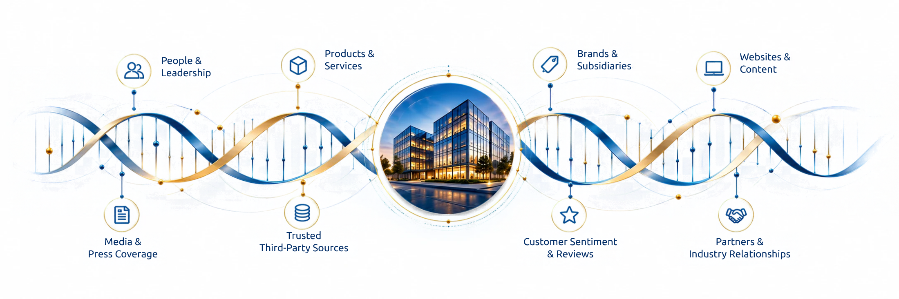
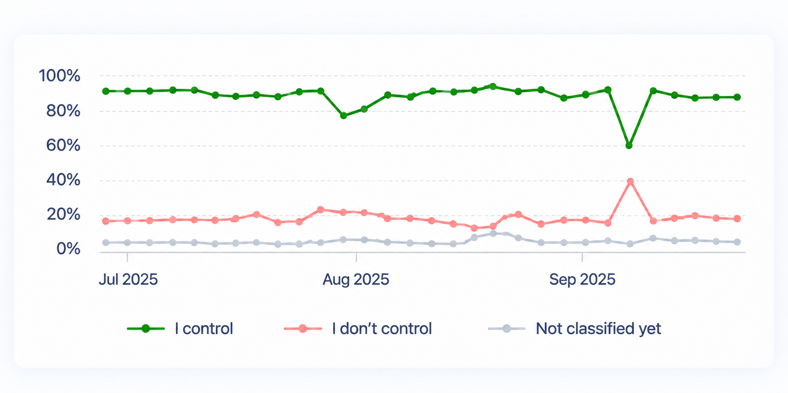

People search your company and ask AI about it before they make important decisions.
Kalicube builds the strategy and Kalicube Pro, our digital brand intelligence platform, gives your team the data and direction to implement it, so what people and AI find reflects who your company is, what it offers and why it should be trusted.
It's still brand strategy. What's changed is who tells the story.
Your marketing, SEO, PR, content and leadership teams all contribute to how your company is understood.
But Google and AI don't see these activities as separate channels. They combine information from across your digital ecosystem, including sources your company doesn't control, to form one understanding of your business.
That changes the job of corporate brand strategy:
Your teams need to reinforce the same brand narrative, not create conflicting signals.
Third-party sources need to corroborate what your company says about itself.
Your company, people, products and expertise need to be clearly connected and understood.
Those signals need to remain consistent as the business evolves.
Corporate Digital Brand Engineering creates the strategy that brings these signals together, so your organisation is understood consistently across search and AI.
"Our company has made some significant shifts in our business over the past couple years, many of which have been influenced by opportunities uncovered by following the Kalicube process.
Specifically, to make it easier to generate helpful press mentions and other signals for LLMs, we've been working to unify our efforts around a simplified communication strategy."
BJ BellamyVP of Marketing
What we engineer
Your company exists online through far more than its website.
Your executives, products, brands, content, media coverage, partners and third-party sources all contribute to how your company is understood.

Corporate Digital Brand Engineering brings these signals together so your company tells one clear, consistent and credible story across search and AI.
How Corporate Digital Brand Engineering works
Strategy from Kalicube. Intelligence from Kalicube Pro. Execution by your team.
Corporate Digital Brand Engineering gives your team the strategy, data and prioritised actions to build and strengthen your corporate digital brand.
01
Diagnose and build the corporate digital brand strategy
Kalicube defines what needs to change. We analyse how your company is understood across its digital ecosystem, identify gaps and inconsistencies, and build the strategy to correct them.
Delivered by Kalicube
02
Prioritise actions with Kalicube Pro
Kalicube Pro tells your team what to do next. Built on 25 billion data points and 73 million entities, Kalicube Pro turns intelligence about your brand, competitors and digital ecosystem into prioritised actions for your team.
Powered by Kalicube Pro
03
Your team implements the corporate digital brand strategy
Your team puts the strategy into action. Kalicube Pro provides prioritised tasks across SEO, content, PR, websites and brand, and your internal team implements them.
Implemented by your team
Turn corporate brand strategy into measurable action
Give your marketing team direction you can measure.
Your marketing team doesn't need more activity. It needs to know what deserves attention, why it matters and whether the work is making a difference. Corporate Digital Brand Engineering turns strategy into prioritised direction your team can execute, while Kalicube Pro provides the intelligence to keep that direction current.
For marketing leadership, that means less time deciding where to focus, and more headspace for the decisions only you can make.
What needs attention now
Kalicube Pro identifies the most important opportunities and gaps for your brand, based on how it is understood across the digital ecosystem.
Topics and narratives to strengthen
Competitors gaining visibility
Content gaps and inconsistencies
Your team executes the strategy
Your internal team works on the prioritised actions across SEO, content, PR, websites and brand, with clear direction and context.
Create or update content
Strengthen key digital assets
Support with PR and thought leadership
Measure corporate digital brand progress
Progress is measured over time with real data from Kalicube Pro, so you can see what's working and where attention is needed.

What needs attention next
As the data changes, new opportunities and risks emerge. The strategy is updated and your team moves to the next set of priorities.
Refine the strategy based on results
Address new opportunities
Keep building long-term visibility
It’s still brand and reputation. What’s changed is who tells the story.
How AI search changed brand and reputation management
As Jeff Bezos would say today, your brand is what Google and AI say about you when you’re not in the room.
HOW IT USED TO WORK
Buyers typed a search, saw ten links and did their own research.
Your reputation was the first page of Google.
Reputation management drowned the problem in content.
HOW IT WORKS NOW
Buyers ask an AI assistant and get one answer, already researched for them.
Your reputation is whatever that answer says.
Brand engineering corrects the record, because machines don’t count content. They look for the same answer in enough places, for long enough, to believe it.
AI isn’t being unfair to you. It has assembled a picture from what it can find, and the picture is wrong.
Why AI gets your company wrong, or hedges
Or it’s hedging, which is worse, because nothing looks broken.
You already know there’s a gap. We measure it.
How Strategy Plus works, in three steps
What Strategy Plus includes: the strategy, the data and a weekly cycle your team runs
We build the strategy once. The platform keeps it alive: it collects the data, evolves the strategy and tells your team what to do. Your team does the work.
1
We build the strategy
In the first month: the aim of the game, one corroborated story for each brand in your group, who it’s for, and the questions that matter. We train your team on it. You validate the facts and the priorities; we own the method.
2
Kalicube Pro collects the data and evolves the strategy
Every week, Kalicube Pro collects data on you, your market and competitors, and your audience, across search, the knowledge graph and LLMs. As the data changes, the strategy evolves with it, so it never goes stale.
3
Every week, the machine tells your team what to do
Kalicube Pro’s AI knows your strategy, your brands and the data, so every week it tells your team what to do and shows what moved. They never go off track, page by page, ICP by ICP and funnel by funnel, for every brand in your group. We step in only in exceptional, specific circumstances.
What your marketing leader gets is headspace
How Strategy Plus takes the strategic weight off your marketing leader
Your team isn’t short of people who can execute. It’s short of certainty about what’s worth executing.
Certainty
What matters, in what order, and why, set in the strategy and updated as the data changes.
A weekly answer
To the question the board will ask: did it move?
A stronger team
People who get better at this every week, because the machine tells them what to do and shows them what worked.
How you’ll know it’s working
How we measure results and demonstrate what moved
Every week you see whether Google and AI named you, how they described you, and whether the answer matched your story. Kalicube Pro tracks how AI understands, trusts and recommends each of your brands, and demonstrates what moved, measured against your own goal.
EVERY SUNDAY
Collect the data. Evolve the strategy. Tell your team what to do. They do the work. See what moved. Next Sunday, again.
See where you stand. Then build the strategy.
Get a free AI audit and strategy for your brands
The first step is a free AI audit and The Kalicube Process strategy for your brands. From there, the full strategy is built in the first month.